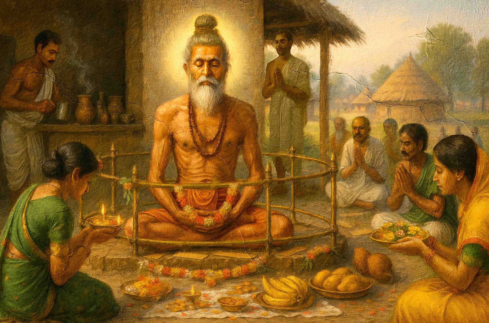

About
A researcher by profession. A student of the tradition by inclination.
By day I work on corporate sustainability — a PhD, peer-reviewed research and consulting practice on how businesses manage themselves through climate change. Away from that work, for many years, I have read the Vedic texts and studied the esoteric traditions. This site belongs to the second life.
तमसो मा ज्योतिर्गमय
Lead me from darkness to light.
Bṛhadāraṇyaka Upaniṣad 1.3.28
{{ f.head }}
{{ f.body }}
The professional work
Corporate sustainability, done empirically.
My doctoral research examined how businesses are managed in the context of climate change. The work since has stayed in that intersection of commerce and environmental stewardship: circular-economy principles in corporate settings, sustainable supply chains, carbon reduction, green innovation and corporate responsibility under climate pressure.
As a consultant I turn that research into strategy — sustainability roadmaps, environmental management systems, alignment with global goals, stakeholder engagement — working with executive teams and grounding every recommendation in data. I publish in peer-reviewed journals, present at international conferences, and collaborate with institutions on research.
The personal study
Ancient wisdom, read closely and for years.
The Vedic texts came first and have stayed longest: the philosophical depth of the Upanishads, the practical wisdom of the Bhagavad Gita, the cosmic principles set out in the Vedas. Alongside them, a comparative reading of occult traditions from other cultures — Hermetic principles and their parallels in Eastern thought, Kabbalistic symbolism, Sufi mysticism and its approach to unity.
The practice side is astrology, both Western and Vedic systems, and tarot. I do not treat tarot as a predictive machine but as a method of self-reflection — a way of illuminating subconscious patterns and finding another angle on a difficulty.

Tapasyā — the practice of staying with something long enough
What I study
{{ s.tag }}
{{ s.head }}
{{ s.body }}
A line I keep
The two worlds stay separate, and deliberately so.
My consulting and academic work rests entirely on scientific method and established business practice. No astrological insight, tarot reading or esoteric consideration enters my professional advice or my research. Clients of one are never clients of the other.
What I will grant is that a wide reading shapes a worldview. Systems thinking, an eye for interconnection, patience with complexity — these travel between the two, even where the methods do not.
Where the work appears
All three channels →Getting in touch
Two doors, and it helps to know which one you are knocking on.
Professional
Sustainability consulting, climate adaptation strategy, speaking and workshops. Please write through my professional channels.
Enquire →Personal
Astrology and tarot readings, or a conversation about Vedic philosophy, comparative religion and the esoteric traditions.
Book a reading →